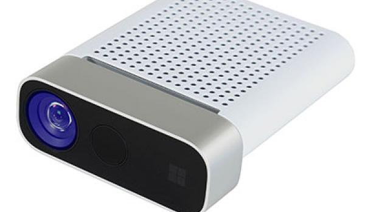
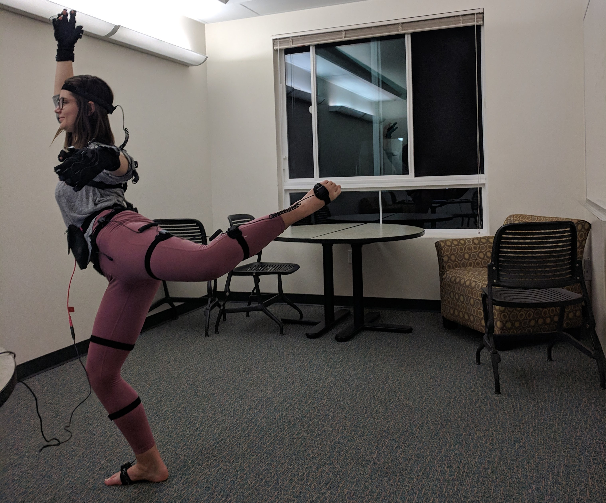

This project uses two body tracking devices, a Kinect and an Axis Nueron Motion Capture suit, to control a robots arm. There are two different scenes, one for each type of body tracking where the user does not need to use controllers to move their arms in virtusl reality.
The goal of this project was to create a scene where we could eventually test which type of motion capturing system users perfered to controll their characer's arms. We want to be able to test which system feels more emmersive.
Using The Kinect

The first scene uses the Kinect Azure which can track multiple bodies in real-time by using many sensors, including cameras.
To convert the raw data into joint positions I used the Azure Kinect DK.
I used a unity package to integrate this unto unity and map the joint positions , given by the Kinect, onto the character's corresponding body parts.
I then made the camera move with the character, while allowing the camera to rotate freely.
Finally, I added simple interactions to see what it felt like to pick up an object in virtual reality without using controllers.
Using the Motion Capture Suit

The Axis Neuron Motion Capture suit uses sensors all over the body to track the player position.
Axis Neuron has a package for unity that allows you to use pre-rocorded motion capture data or realtime data to control a character.
My main task was to convert that character into a scene in VR where the camera position followed the eyes, but allowed for independent rotation.
Used pre-recorded data because the suit was not with me.
I thought the motion capture suit allowed for more precise movement of the hands and fingers
which I think is important when playing games. This is because the Axis Neuron has sensors on each finger,
whereas the kinect had a hard time detecting such small movements. For this reason, I think users would find
suit gives a more immersive experience.